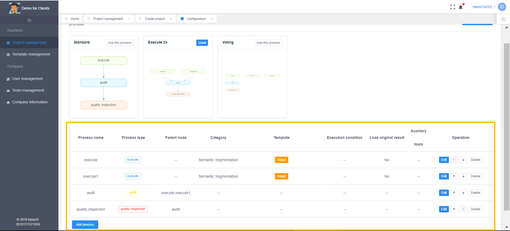
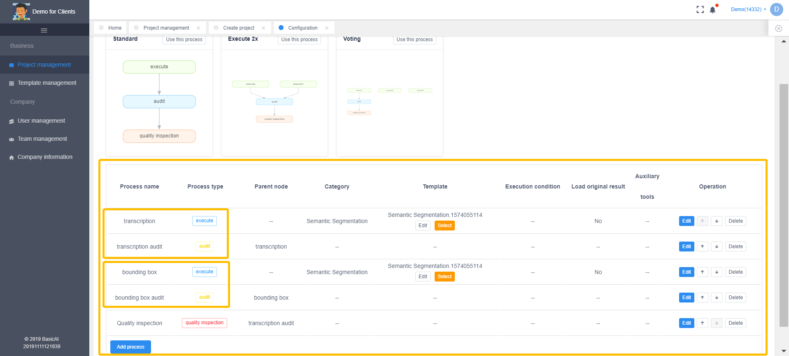
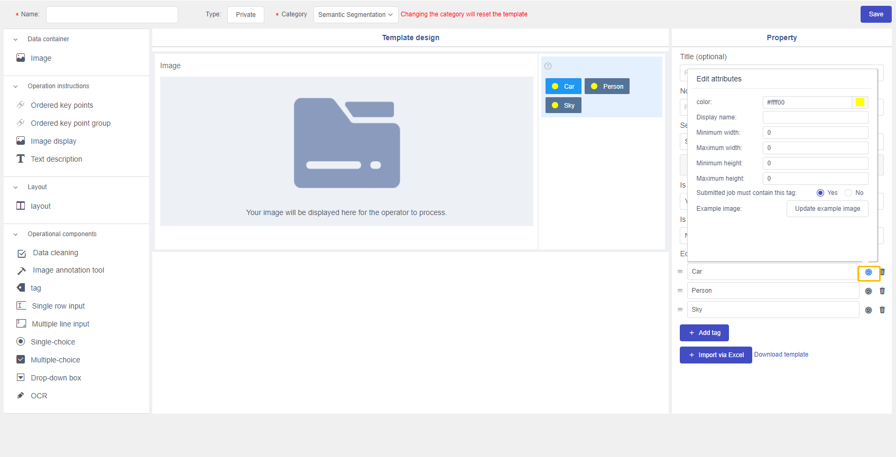
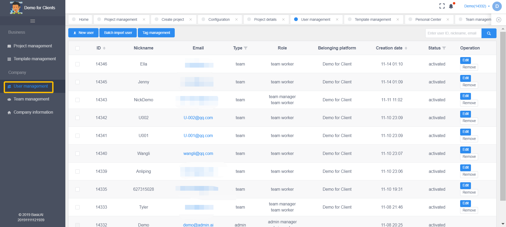

Admin Module
This is an outline of the Admin Module, mainly used to create projects, set up templates, and monitor the progress of projects that are underway.
Platform Login
As a admin user, you will log into the platform through below URL
https://admin.saas.basic.ai/login (SAAS)
https://admin.sandbox.basic.ai/login (Sandbox)
1 Project Management(Admin Manager)
Let’s take creating an image annotation project as an example.
1.1 Create Project
Log in to the Admin platform, then click [Business]—>[Project Management]—>[Create project]
After clicking [Create project], you will enter project type page as below:
Select project type as [Object Recognition(2D Bbox)] before clicking [Create project]
1.2 Project Basic Information
Basic information for creating a project include category, project name, start & end time, and Upload data package.
Category:
It is the project type you choose when you create a project.
Project name:
It would help the project administrator/manager search and manage projects conveniently.
Start & end time:
This determines the execution period of the project. An operator can only execute tasks in the project within this period.
Upload data package:
There are three ways to upload your data: web page, SSH, and FTP (with permissions).
Through web page:
Click the rectangle area shown in the image below to select to-be-annotated files, or drag the files into the area.
Via SSH and FTP:
When there is an enormous amount of data to be annotated, SSH and FTP, with special tools, can be used for uploading the data. In addition, uploading via FTP requires permission from us.
Publish project:
After filling all the project information, click [publish project], then you successfully created a project on the platform.
1.3 Project Configuration
On the project list, projects are sorted according to the time they have been created so users can easily find the latest projects. When a project is not configured, the [configuration] button will be highlighted in orange to remind the project administrator to configure it.
In the following instruction, let’s find a newly created project and start configuring it by clicking the [configuration] button.
1.3.1 Allocate Batch
To configure a project, the first step is to divide data into numerous batches for the sake of project management and data exporting.
This platform provides three methods to divide data: allocate by category, allocate equally according to the total amount, and freely allocation. Data division is only suitable for dealing with a tremendous amount of data requiring management of various batches.
If a project does not need to divide its data into batches, the project administrator/manager can skip the step by simply clicking [Save] on the page and then clicking [Confirm, next step] in an ensuing pop-up window.
1.3.2 Setup Process
The second step is to set the processes of a project.
Processes are defined in three types based on their functionality: execution, audit, and quality inspection. These three processes can be added, deleted, edited and re-arranged in any projects.
By setting a parent node for each process, you can determine the sequence of different processes. In the image above, execution is the parent node of audit, while audit is the parent node of quality inspection.
1.3.2.1 Execution
Execution is the process in which an operator or an AI model generates results by collecting, cleaning or annotating.
“When configuring an “execution” process, you need to set the category of the process and select a template.
Set process category:

Set a template:
[Use Copy Template]:
This button will allow you to create a new template by copying the original template, without changing the content of the original one.
[Use this template]:
This button will allow you to use the original template without creating a new one. If you apply any changes to the template, other projects using it will update their template as well. This feature is suitable for long-term projects.
Tip:
For public templates, the platform only allows users to copy them. If you want to edit a public template, please check [Category/Classification Management] on Root platform.
After confirming a template, you can edit it or choose another template by clicking the corresponding buttons below.
1.3.2.2 Audit
The “audit” process is where job results from the last process are approved, rejected or reset.
When setting an “audit” process, a parent node must be set for auditors to examine all jobs submitted.
1.3.2.3 Quality Inspection
Like audit, “quality inspection” also examines jobs, except that it does not have to go through all jobs submitted. Spot check can be done here.
It is recommended that a quality inspection process be set at the end of a workflow.
Serial Processes:

Parallel Processes:
The image below demonstrates the processes of a task involving image transcription and bounding box.

The quality inspection process has two parent nodes: Bbox audit and transcription audit.
Click [Save,next step] to the third step.
1.3.3 Set Tasks
According to batches and processes set before, a project will be divided into various tasks. The third step of project configuration is to set the number of sheets that can be claimed each time for every task, define execution time, and assign the tasks to various teams, so as to achieve dynamic productivity management.
Number of tasks
number of batches*number of processes
For example, when there are 2 batches and 3 processes for each batch, there will be a total of 6 tasks.
By clicking [Settings] you can set the execution conditions for a task.
[Select target] allows you to select annotation teams, crowdsourcing or models to execute the task. Click [Save] to save the settings.
Click [Save settings] to complete setting.
Definitions:
Task name: The name of a task when it is available on the Team platform.
Number of jobs claimed each time:
The number of jobs or sheets cached by the system for an operator when he/she is executing tasks. When the operator finishes the cached jobs, the same amount of new jobs will be cached automatically.
Start time:
The time when a task becomes available on the Team platform.
End time:
After the end time, operators will not be able to execute the task, while their performance will be kept.
Platform:
Determine what platform the execution subject comes from.
Target:
When you have chosen “team” in platform selection, you can select a valid team for this option; when you have chosen “AI model” in platform selection, you can select a valid AI model for this option.
[Batch settings] By checking the boxes on the left side of the task list, or click [Select all and execute][Select all and audit][Select all and inspect], you can set multiple tasks at once.
1.4 Export Annotation Results (Admin Manager)
When the project administrator/manager logs in to the Admin platform, he/she can enter the project detail page by clicking [Project Management] on the left panel and then clicking the name of a project presented on the page.
On the project detail page, click [Download Results] to enter the download page.
When downloading results, you must select:
Download batch:
One or more batches of the project;
Download steps:
You must select one process of the project for downloading results. When you choose the “execution” process, submitted jobs in the execution process will be downloaded; when you choose the “audit” process, approved jobs in the audit process will be downloaded; and when you choose the “quality inspection” process, all jobs under quality inspection will be downloaded.
Download file format:
You can select one of various file formats based on your needs. If you require results in various formats, you have to download them separately in different formats.
Configuration options:
By setting the options, you can decide whether the results need to be translated into Chinese and whether to filter out empty results.
Time:
You can download job data in a package from a specific period of time.
After setting all the options above, when you click [Pack data], to-be-downloaded data will appear on the list as shown below. When the status of data turns into “Packed successfully”, it means the data is ready to be downloaded.
If you want to download multiple packages at once, you can check the boxes on the left side of the list. This requires turning off the [block pop-ups] feature in browser settings.
To disable the feature in Chrome, go to [Settings]—> [Advanced]—>[Site Settings]—>[Pop-ups and redirects] to turn it off.
2.Template Management
The project administrator/manager is able to enter the template editing page through the [Template Management] button or when setting the processes of a project.
The editing page is divided into three areas: module selection, template preview, and module attribute editing.
For image tasks, Layout module is often used to split the page into two parts: the left part is for image preview, and the right part is for tag selection or transcription. This arrangement is shown as below:

For Single-choice, Multiple-choice, Single-row input and Multiple-row input modules, there are more instructions as follows:
2.1 Single-Choice/Multiple-Choice Modules
For Single-choice/Multiple-choice modules, the attribute editing area features following functions:
[Add option] By clicking this button, you can add a new option.
[Delete option] By clicking the trash can icon to the right of an option, you can delete the option immediately.
[Drag option] By pressing and dragging the triple-strip icon to the left of an option, you can change the position of the option.
[Set default option] By checking the boxes on the left, you can decide which options are set as default.
【Hotkeys】 Click this button to enable hotkeys. After selecting the button, press a letter or a number on the keyboard to set it as the hotkey for an option. For instance, in the picture below the hotkey for option “Valid” is set as “1”, the hotkey function for option “Invalid” has been activated without actually setting a hotkey, whereas option “Not sure” has not had the feature activated.
2.2 Single-Row/Multiple-Row Input Modules
These two modules are introduced for an operator to input text. The difference between a single-row input module and a multiple-row input module in task configuration is that the latter has an icon in the lower-right corner.
In terms of task execution, the single-row input module is shown within a height of one-row text and no word wrap, whereas the multiple-row input module is shown within a maximum height of triple-row text. In addition, if the text exceeds the triple-row height of the multiple-row input module, a scrollbar will appear on the right to allow the module to fit more characters.

2.3 Data Cleaning Module
This module is used to determine whether an assignment is valid and whether it needs editing.
When “Yes” is chosen for the validity option, assignments with empty or unqualified results cannot be submitted by an operator. When a tag is set as a necessity, an assignment can be submitted only if its results involve that particular tag.
When “No/Unknown” is chosen for the validity option, no examination of results is required for submitting assignments.
In the labeling process, if there is no result, the assignment cannot be submitted:
If the result does not contain a necessary tag, the assignment cannot be submitted:
2.4 Form Group Module
This module is useful in labeling a specific part of a job. When you need to label both the whole job and a specific part of it, you can drag a form group module into the template before adding necessary components into the form group.
For instance, the audio labeling template below requires an operator to determine the validity of the whole audio clip; in contrast, he/she only has to label the role and sex of a speaker from a particular part of the whole clip: this is when a form group module is needed to include two single-choice modules for labeling the role and sex.
This is how the template is shown in the labeling interface:
2.5 Tag Module
The tag module supports two types of tags: single tag and tag group. You can select either of them through [Set tag type].
For a single tag, the administrator can click the “settings” icon on its right to set attributes of the tag: color, code name, necessity, maximum/minimum width and height for labeling, as well as an example image for the tag (to help the operator better understand it).

2.5.1 Set Tag Color
In the attribute settings, you can click on the palette to choose different colors for each tag.
The picture below shows tags in different colors in the labeling interface:
The picture below shows tags in different colors in the audit interface (mark image):
The picture below shows tags in different colors in the audit interface (mask image):
2.5.2 Set Tag Display Name
Setting a display name for each tag could help the operator better grasp the meaning of the tag, as is demonstrated in the following picture:
2.5.3 Specify Width and Height Limits
The picture below shows how to set the width and height limits for each tag:
In the image below, when labeling, if an operator draws a rectangle that does not meet width or height limits, the rectangle will be filled with red to warn the operator of the error. And when the operator finishes drawing, the rectangle will disappear from the page without saving the result.
For a labeling rectangle, when its width or height does not meet the limits that are added after the rectangle is drawn, adjustment mode will be activated to inform the operator to “adjust the size of the figure as it exceeds the limits of the selected tag.” If the operator refuses to adjust it, the labeling result will be discarded and the rectangle will disappear.
The correct one will be save as below
2.5.4 Set Tag Necessity
When you set a tag as “necessary”, a necessity icon will appear to the left of it to remind the operator that this tag is a must-have in the assignment.
This attribute should be used along with the data cleaning module.
When an operator submits a job, the system will verify if any necessary tag has been selected. The operator will be sent an error warning when a necessary tag is not selected in the assignment.
2.5.5 Set a Sample Image
This feature allows you to add a sample image for each tag, so that an operator can better comprehend the annotating rules.
The following image shows how sample images are shown in the annotating interface:
3.User Management
After logging in to the Admin platform, click [User Management], you can check all the users on admin and team platform that belong to the same tenant.

You can search users by type, creation time, status etc. and also create new users or set tags for the users.
4.Team Management (Admin Manager)
4.1 Create and Edit Team
4.1.1 Create Team
After logging in to the Admin platform, click [Team Management], and then click [Create new].
Enter basic information about your team in a pop-up window. Set [Status] as “Approved” , and then click [Save].
Now you have successfully created a team.
4.1.2 Edit team
Find a target team on the team list, and click the [Edit] button on the right.
After you have edited information, click [Save] to keep the changes.
4.2 Add/Remove Team Members(Admin Manager)
4.2.1 Add member
When the project administrator/manager logs in to the Admin platform, he/she can go to [Team Management] to find a target team on the list before clicking the [Manage] button on the right.
Click [Create new]
Enter information about the new member in a pop-up window, and click [Save] to finish the addition.
In the pop-up window, you can choose multiple roles for a member to determine the scope of his/her permissions.
4.2.2 Edit and Remove Member
Find a target account on the member list, and then click [Edit] or [Remove] on the right based on your needs.
4.2.3 Add/Remove a Member(Team Manager)
4.2.3.1 Add a Single Member
When the team manager logs in to the Team platform, he/she can click [Team Members] on the left panel to enter the team member list, and then click the [Create a user] button.
Enter basic information about the new member and select roles. Click [Save] to complete the addition.
In the pop-up window, you can choose multiple roles for a member to determine the scope of his/her permissions.
At least one group must be set in advance before you select a group for the new member.
4.2.3.2 Add Multiple Members
Click the [Batch import user] button above the team member list.

Click [Click to download Excel template] to download the template for importing members.
Open the Excel template on your computer, input information about new members, and save the file.
Information you need to provide in the template: nickname, password, email address, and mobile phone number.
When importing multiple users, you cannot choose roles for them. Their roles are all set as “operator” by default, which can be changed later.
After filling out the template, the team manager needs to upload it and click [Next step].
After uploading, you can check the information loaded from the template. If the information is correct, click [Import], otherwise you need to edit your Excel file and click [Re-select Excel File] to upload it again.
If a system notification appears on the upper-right corner of the screen telling you that the importation is complete, it means you have successfully imported multiple team members.
4.2.3.3 Remove a Member
When the team manager finds a target member on the member list, he/she can remove the member from the team by clicking the [Delete] button on the right. The team manager is not allowed to remove himself/herself.
4.2.3.4 Edit a member
Click [Check] to enter the details page of a member, and then click the [Edit] button on the right.
After editing the member’s information, click the [Save] button.
5. Company Information
Company information show all your admin account information.